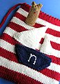

|
||
Premium Patterns Wintry Mix Mitts Love Bytes HawkeyeFree Patterns Kiddie Cadet Summerlin Ruffled Scarf Seamless DS Sock Simply Seamless Pouch Myriads of MushroomsExtras DIY Mitten Blocker Felt Patch Tutorial Yarn Dyeing Tutorial Needle Pouches Knitting Journal |
November 08, 2007 - Posted by Alice SchneblyReady to set sail!Project Specs Mark another gift off as finished! Last night I put the final touches on this sweet little bag. This time around I really took special care to have high quality finishing and I’m really pleased with how it looks. Well, for the most part, I can never seem to get my I-cord to look that great. Anyone out there have any secrets to knitting pristine I-cord? This bear-y nautical buddy bag is going to be a Christmas gift for my cousin’s daughter Natalie so I embroidered a little ‘n’ on the front of the boat. I think it really adds that special little touch! In fact, it’s one of my favorite things about this bag! Actually, I love the color scheme, the lining, the darling little finger puppet… yeah I guess you could say I love pretty much everything. Once again TLC Cotton Plus really was the perfect yarn for this bag. I love the fact that I am finally using this yarn up—though really I have tons more, so I definitely see more buddy bags in my future! This was my first time using Bernat Satin, which is 100% acrylic. It’s very soft but it is splitty and fuzzes up a bit if you handle it too much. I think it works well for this bag though, especially where small kids are concerned there’s no need to use anything too fancy. I won’t be able to see Natalie open her present when x-mas comes around but I really hope she loves it and it gets lots of use. I think it will be perfect for her to carry to daycare or for taking her favorite toys over to her grandparents’ house. I know that Camdyn likes to take her buddy bag to the store, on car rides, or basically anywhere that she wants to have extra toys along! Once again I have to wholeheartedly say how much I really like this pattern and it certainly makes a great gift for young kids. I think it would also be cute to give to an expectant mother at a baby shower and would be useful to carry around a few diapers and wipes. The finger puppet would also come in handy when you need to cheer up a fussy baby! |
   Recent ReviewsRecent Posts
 Our Favorites
|
| © 2007 KathrynIvy.com | ||
{kind=link}
{kind=link}